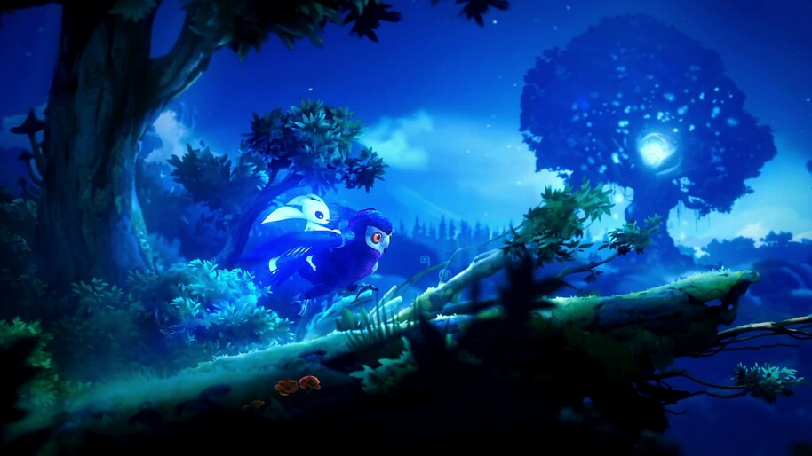
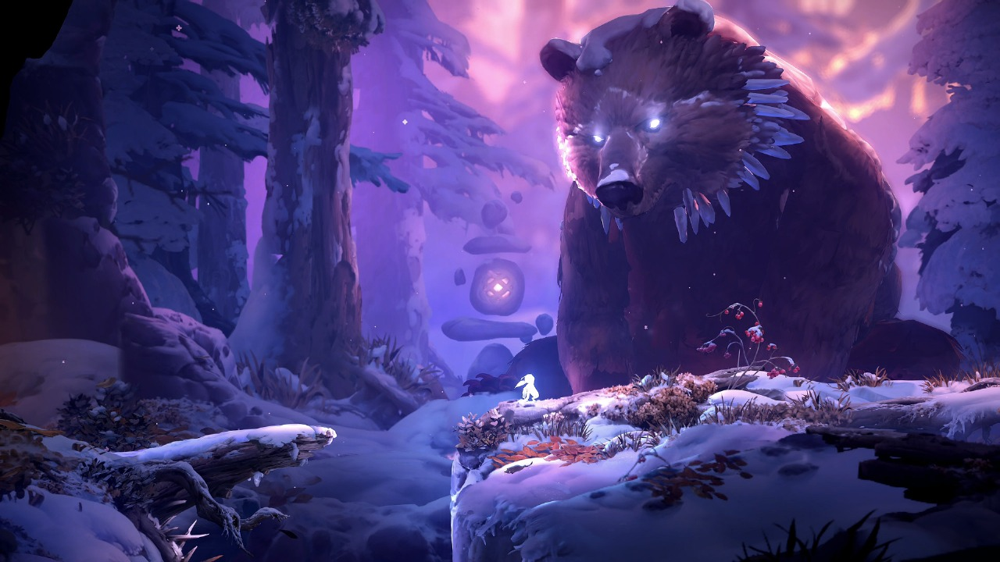
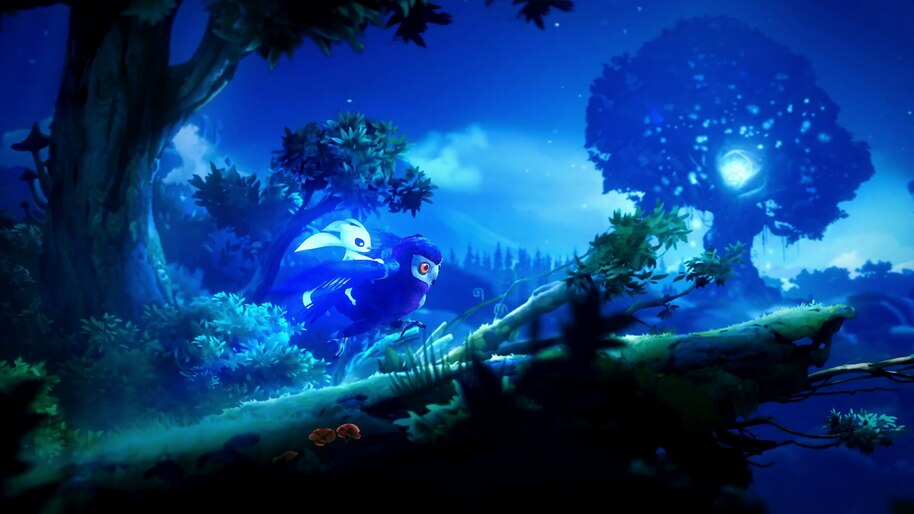
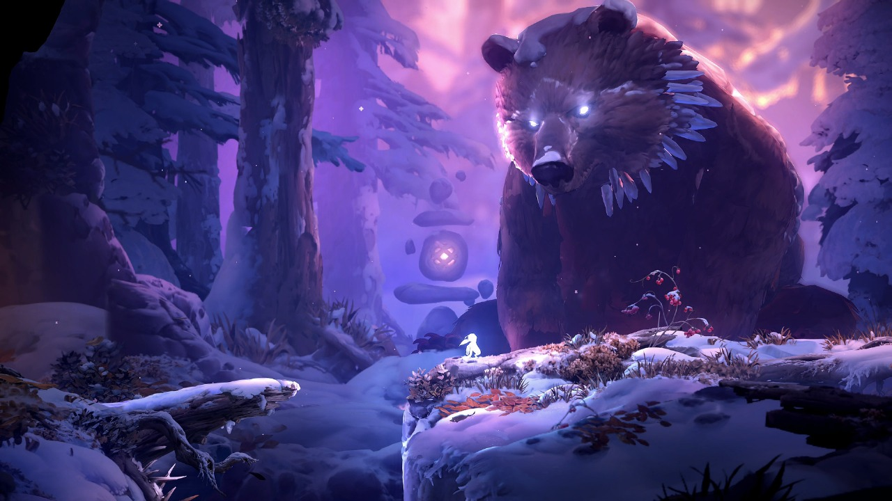

ORI AND THE WILL OF THE WISPS
Ori and the Will of the Wisps é mais do que uma sequência — é uma obra de arte em movimento. Desenvolvido pela Moon Studios, o jogo aprofunda o universo mágico apresentado em Ori and the Blind Forest, trazendo uma jornada emocional ainda mais grandiosa, com novos personagens, desafios e uma narrativa que toca a alma.
A história começa após os eventos do primeiro jogo, quando Ori se separa de sua amiga coruja Ku durante uma tempestade. A partir daí, o jogador é lançado em uma nova terra cheia de segredos, criaturas misteriosas e beleza selvagem, enquanto Ori busca reunir-se com Ku e restaurar o equilíbrio de um mundo que lentamente se desfaz.
A jogabilidade reflete a evolução de Ori como personagem. O sistema de combate e movimentação é fluido, preciso e profundamente emocional, transformando cada salto, cada fuga e cada batalha em uma dança entre fragilidade e força. O mundo é vasto, interconectado e cheio de pequenas histórias escondidas — cada uma reforçando a sensação de que, mesmo na escuridão, há sempre um fio de luz.
Mas o verdadeiro coração de Ori and the Will of the Wisps está em sua mensagem sobre perda, amor e renascimento. Ele fala sobre o poder da compaixão, o peso do sacrifício e a beleza de continuar lutando mesmo quando tudo parece perdido.